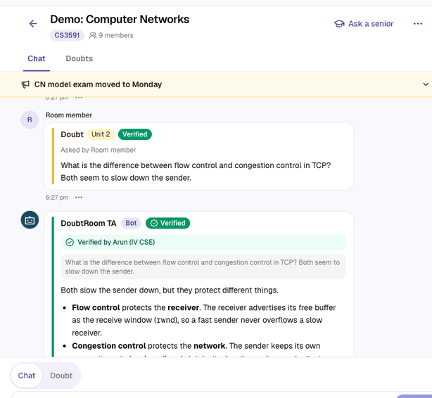

Exam-season study rooms for Anna University students. Post a doubt in your subject room, read the AI teaching assistant's answer inside the chat, and see which answers a senior has verified.
{{APP_KEY}}
The seeded Computer Networks room in the /try sandbox: a doubt, the TA's answer and a mentor verification.
A question about TCP can disappear under timetable updates in the class group. The senior who knows the answer may be in another section. On exam morning, the student still has to work out which explanation to trust and revise.
DoubtRoom gives each subject and section its own chat room for exam season. Questions stay as structured cards, the answer sits beside the question, and a mentor's verification is visible on the card itself.
Third-year student
A formula makes sense until the worked example switches units. She needs to post the exact question, with a photo if it is in her notebook, and find the answer again when she revises.
Fourth-year mentor
With fifteen minutes between classes, he needs a short list of questions that still need a human check, and a way to confirm or correct an AI draft.
Section administrator
When an exam hall changes, the rep needs the notice to stay pinned and a way to check how many members have seen it.
The catalog covers four Anna University R2021 courses, with subject and section rooms provisioned per class. Real course codes for a given college's current regulation still need to be confirmed before a wider launch.
bot_ta, so its answer appears as a chat message.Photo doubts are read by Gemini (gemini-3.5-flash-lite). Course notes uploaded by an admin are chunked and embedded (gemini-embedding-2), so an answer can cite its source as [S1], [S2]. Answers follow the language the student chose: English, Tamil or Tanglish.
Members upvote helpful answers. A course mentor verifies an answer, which updates the card live through message metadata. The room doubt board groups open, answered and verified questions, and the mentor inbox lists what still needs a review.
From an answer, a student opens a private direct chat with a mentor. The quoted doubt travels with the conversation, with typing status and read receipts.
A class rep posts a pinned announcement. The card requests group read receipts and shows "Seen by X of Y" with a reader list for the rep. If the plan does not expose receipts, it falls back to "Delivered to N members". This path is built with that fallback but has not yet been checked live with three or more real accounts.
A scheduled Nexconn open channel opens before each paper so students can revise together and ask the TA. The cron job creates the channel for tomorrow's papers.
At 07:00 IST a scheduled job looks back 24 hours, ranks verified answers first, then by upvotes, and posts up to five distinct doubts per room as a recap card.
A signed 24-hour cookie opens a seeded Computer Networks room with classmates and a scripted demo mentor, with no Google sign-in. Demo access is scoped to the demo room, and each IP can start up to 40 sandboxes per hour.
Packages: @nexconn/engine and @nexconn/chat 26.2.1, @nexconn/server-sdk v0.1.2. No Call SDK.
| Feature | How it is used |
|---|---|
| Chat identity | Server issueAccessToken for the authenticated actor; browser NCEngine.connect. |
| Subject and section rooms | Group channels created and joined during provisioning, onboarding and the admin room sync. |
| History and messages | Paged message queries, text and image messages, group @mentions. |
| Study cards | Custom message types for doubt, answer, announcement and recap, registered right after initialize. |
| AI TA as a member | Server API group message sent as bot user bot_ta. |
| TA trigger | message:send webhook: signature verified, deduplicated by message ID, answered once. The browser relay is a fallback. |
| Live upvote and verify | Message metadata updated on the server and read by connected clients. |
| Mentor DMs | Direct channels with the quoted doubt, typing status and read receipts. |
| Mentor availability | Online-status subscription, with a cached server getUserConnectionStatus lookup as fallback. Not yet verified live with a mentor going on and offline. |
| Announcement readers | Group read receipt requests and receipt-user query, with a "Delivered to N" fallback. |
| Exam Eve | Open channel creation, entry and bot messages. |
| Moderation | Group mute list and the app profanity list. |
| Reconnect | Connection status handler and history backfill after a drop. |
The TA is a real chat member rather than a UI overlay, so its answers live in the same history as human messages. Message metadata lets a mentor's verification reach every reader's card without a reload. Direct channels, group and open channels let one SDK cover rooms, 1:1 help and the Exam Eve session.
React UI, the Nexconn chat SDK, and a direct connection to Nexconn for messages.
Actor and room checks, AI requests, the webhook, server messages and the 07:00 IST cron.
Google sign-in, Postgres, pgvector for notes, signed photo uploads.
Group, direct and open channels, receipts, message metadata, and the message:send webhook.
bot_ta, status metadata updated.openai/gpt-oss-120b answers text doubts, @TA mentions, Exam Eve and the morning recap.gemini-3.5-flash-lite reads photo doubts and is the fallback for text. gemini-embedding-2 grounds answers in uploaded notes with [S#] citations./api/ta/ask as a backup, and the server reserves each message once, so each message is answered once. A provider or quota failure shows a visible status card instead of silence.The server derives the chat identity from the session; tokens are issued only for the authenticated actor and never for a client-supplied user ID. The Nexconn App Secret, Supabase service-role key and model keys stay server-side.
AppKey header and sha1(secret + nonce + timestamp) signature checked in constant time, timestamps limited to 5 minutes, then acknowledged and processed after the response. The signature does not cover the body, so membership, quota and message-ID checks bound a replay.
Room membership gates room actions, and course roles gate verification. AI requests have per-user, per-room and global limits, reserved before a provider is called.
A signed, expiring cookie identifies the visitor. Access is scoped to the demo room and its scripted mentor. Admin room sync is admin-gated and returns 401 to anonymous callers.
Figures from the public /impact endpoint, read on 20 November 2026 (last updated 20 Nov 01:33 IST). They are small and reported as they are.
Real doubts, AI answers, verifications and upvotes are all zero on the real-user side, so the dashboard has no median answer times yet. Sample doubts, votes and the mentor review you see in the demo belong to the seeded sandbox, not to real students. Automated end-to-end tests also posted test doubts into the demo room.
Google sign-in and onboarding on production, mentor verification updating cards on two devices, announcement "Seen by" with three or more readers, mute and unmute, Exam Eve with two users, and the mentor presence dot. These paths are built, with fallbacks where noted, but should not be read as proven in live use.
DoubtRoom starts with one curriculum and an exam-season window. A small pilot can show whether subject rooms help students find answers they can use again.
Recruit a class representative and a course mentor for a subject with an upcoming exam. Track how often AI drafts receive a review and whether students return for the recap.
Review activity and answer quality across the exam period. Collect student and mentor feedback with permission before moving to another cohort.
Students use the rooms free. Colleges or coaching centres could pay per student for private course rooms, curated notes grounding and aggregate usage reports. This is a proposal, not a live revenue stream.
Other colleges in the same group, then other Anna University affiliated colleges, then exam-coaching cohorts.
The application code was built between 18 and 22 November 2026, using the open-source libraries in package.json. It was built with Claude Code, OpenAI Codex and the Nexconn nexconn-chat skill. The course catalog and its sources are documented in the repository.
Open doubtroom-ochre.vercel.app/try for a 24-hour sandbox, or read the code at github.com/dhaanish597/doubtroom. Nexconn App Key: {{APP_KEY}}